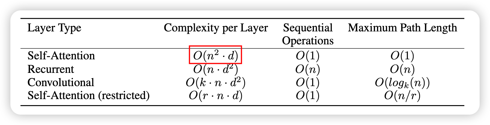
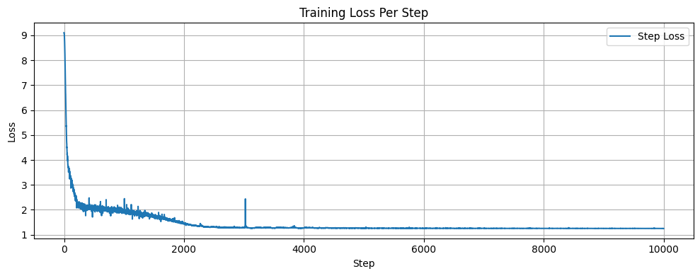

Attention is All You Need(Transformer)
Introduce the Transformer architecture, which relies entirely on self-attention mechanisms for sequence modeling, enabling parallel computation and significantly improving performance on natural language processing tasks.
- Original Paper: Attention is All You Need
- My Implementation: GitHub Repository
Transformer Model, as introduced in the paper Attention is all you Need (Vaswani et al. 2023) has revolutionized the field of natural language processing (NLP) and beyond. This architecture is built entirely on attention mechanisms, dispensing with recurrence and convolutions entirely, which allows for greater parallelization and efficiency in training. Nowadays, it has become the backbone of many state-of-the-art models in NLP, computer vision, and other domains. For example, ChatGPT, DeepSeek, and many other large language models (LLMs) are based on the Transformer architecture.
Self-attention, sometimes called intra-attention is an attention mechanism relating different positions of a single sequence in order to compute a representation of the sequence. Self-attention has been used successfully in a variety of tasks including reading comprehension, abstractive summarization, textual entailment and learning task-independent sentence representations Attention is all you need
doubt, the Transformer paper will be our first paper to read in this series. In this chapter, we will dive deep into this paper, starting with understanding its background and main contributions.
1 Transformer Model
In this section, we will delve into the architecture of the Transformer model, breaking down its components and explaining how they work together to process sequential data effectively.
The dominant sequence transduction models are based on complex recurrent or convolutional neural networks … We propose a new simple network architecture, the Transformer, based solely on attention mechanisms, dispensing with recurrence and convolutions entirely.
Below is the architecture of the Transformer model as presented in the original paper:
As in the Figure 1 , the Transformer model is combined with:
- Input Embedding: Section 1.1
- Position Embedding: Section 1.2
- Multi-Head Attention: Section 1.3
- Layer Normalization: Section 1.4
- Point-Wise Feed Forward Network: Section 1.6
Each small module are combined together to form an Encoder Block and a Decoder Block. The Encoder Block and Decoder Block are then stacked together to form the complete Transformer model. Looks like LEGO blocks, right? Let’s explore each component in detail.
1.1 Word Embedding
Word Embedding is the process of converting tokens into vectors. It is a way of representing words as dense vectors in a continuous vector space. Each word(token) is mapped to a unique vector, and similar words are mapped to similar vectors. This allows the model to capture the semantic meaning of words and their relationships with other words. The Word Embedding is typically learned during the training process of the model.
1.2 Positional Encoding
Since our model contains no recurrence and no convolution, in order for the model to make use of the order of the sequence, we must inject some information about the relative or absolute position of the tokens in the sequence.
One of the problems with transformer is that the model lack the information of the sequence order. To solve this problem, they add “positional encodings” to the input embeddings. The positional encodings have the same dimension \(d_\text{model}\) as the word embeddings, so that the two can be summed. There are many choices of positional encodings, learned and fixed (sinusoidal). In this transformer, they use sine and cosine functions of different frequencies:
\[ \begin{split} PE_{(pos,2i)} &= sin(pos / 10000^{2i/d_{model}}) \\ PE_{(pos,2i+1)} &= cos(pos / 10000^{2i/d_{model}}) \end{split} \tag{1}\]
where \(pos\) is the position and \(i\) is the dimension. They chose this function because we hypothesized it would allow the model to easily learn to attend by relative positions, since for any fixed offset \(k\), \(PE_{pos+k}\) can be represented as a linear function of \(PE_{pos}\).
The Transformer uses positional encoding to provide unique positional information for each word, enabling the model to capture the relative positional relationships between words in a sequence.


From the Figure 2 , we can see that the positional encoding changes continuously as the max sequence length increases (Figure 2 (c)). And under different max sequence lengths, the positional encoding changes are the same, the Figure 2 (a), Figure 2 (b) show the positional encoding changes at position 50 under different max sequence lengths. We can see that the positional encoding is the same under different max sequence lengths, which allows the model to better generalize to longer sequences.
In the Figure 3 , we can see the details of different dimensions of the positional encoding. Compared to dimension (4, 5), dimension (6, 7) changes more with position. From the figure, we can see that:
- Low \(i\) (the earlier dimensions) — short wavelength, changes quickly with position pos → easy to distinguish adjacent tokens;
- High \(i\) (the later dimensions) — long wavelength, changes slowly with position pos → captures global positional information.
Besides, positional encoding can also achieve different effects by changing the base of the sine and cosine functions. For example, the base can be changed from 10000 to 1000, which shortens the wavelength of the positional encoding and makes it easier for the model to capture information from adjacent positions. Figure Figure 2 (d) shows the changes in positional encoding under different bases.
Combine with Word Embedding, we can get the final input embedding:
1.3 Multi-Head Attention
Multi Head Attention is the core module of the Transformer. Its function is to perform multi-head attention calculations on the input vectors, thereby capturing different semantic information. Attention is essentially a weighted sum process, which can be seen as a weighted average of the input vectors. The core formula is:
\[ \text{Attention}(Q, K, V) = \text{softmax}\left(\frac{QK^T}{\sqrt{d_k}}\right)V \tag{2}\]
where \(Q\)、\(K\)、\(V\) are the Query, Key, and Value matrices respectively, and \(\sqrt{d_k}\) is a scaling factor used to prevent the dot product values from becoming too large, which could lead to vanishing gradients. The \(QK^T\) operation computes the similarity between the query and key vectors, resulting in a score matrix that indicates how much attention each position should pay to every other position. The softmax function is then applied to this score matrix to obtain the attention weights, which are used to compute a weighted sum of the value vectors.
Equation 2 is the core formula of Attention, and Attention is the core module of Transformer. Understanding this formula is key to understanding Transformer. Many subsequent innovations, such as Linear Attention (Wang et al. 2020) and Multi-head Latent Attention(MLA)(DeepSeek-AI et al. 2024), are based on improvements to this formula.
Instead of performing a single attention function with \(d_\text{model}\)-dimensional keys, values and queries, we found it beneficial to linearly project the queries, keys and values \(h\) times with different, learned linear projections to \(d_k\), \(d_k\) and \(d_v\) dimensions, respectively.
Multi-Head Attention is an extension of Attention Equation 2 that splits the input vectors into multiple subspaces (heads) and computes attention independently in each subspace. Finally, the outputs of all subspaces are concatenated to obtain the final output. The formula for Multi-Head Attention is:
\[ \begin{split} \text{MultiHead}(Q, K, V) &= \text{Concat}(\text{head}_1, \ldots, \text{head}_h)W^O \\ \text{where}\ \text{head}_i &= \text{Attention}(QW_i^Q, KW_i^K, VW_i^V) \end{split} \tag{3}\]
where \(W_i^Q, W_i^K \in \mathbb{R}^{d_\text{model} \times d_k}, W_i^V \in \mathbb{R}^{d_\text{model} \times d_v}\) are weights matrices used to project the input vectors into subspaces, and \(W^O \in \mathbb{R}^{hd_v \times d_\text{model} }\) is a weight matrix used to concatenate the outputs of all subspaces. The purpose of Multi-Head Attention is to capture different semantic information through multiple subspaces, thereby improving the model’s expressive power。
Due to the reduced dimension of each head, the total computational cost is similar to that of single-head attention with full dimensionality.
As mentioned in the paper, the use of multiple heads allows the model to jointly attend to information from different representation subspaces at different positions. This is particularly useful for capturing complex patterns in the data.
1.3.1 Time Complexity of Multi-Head Attention
Before we continue to explore other components, let’s analyze the time complexity of Multi-Head Attention. Assuming the input length is \(n\) and the dimension of each head is \(d_k\), the time complexity for computing \(QK^T\) is \(\mathcal{O}(n^2 d_k)\), this is the standard matrix multiplication complexity.
Next is the computation of Softmax, which has a time complexity of \(\mathcal{O}(n)\) (wiki). For each row of the score matrix \(QK^T \in \mathbb{R}^{n \times n}\), we need to compute softmax, which requires \(n\) computations. Therefore, the time complexity of Softmax is \(\mathcal{O}(n^2)\).
Then comes the weighted sum for the value, which also has a computational complexity of \(\mathcal{O}(n^2d)\).
The total time complexity of Multi-Head Attention is the sum of the time complexities of these three steps, which is \(\mathcal{O}(n^2d)\): \[ \begin{array}{|l|l|} \hline \textbf{Step} & \textbf{Time Complexity} \\ \hline QK^\top & \mathcal{O}(n^2 d) \\ \text{softmax}(QK^\top) & \mathcal{O}(n^2) \\ \text{attention} \times V & \mathcal{O}(n^2 d) \\ \hline \textbf{Total} & \mathcal{O}(n^2 d) \\ \hline \end{array} \tag{4}\]
Here is the compare of time complexity between Multi-Head Attention, RNN and CNN: 
1.3.2 Causal Attention
Causal Attention is a special type of attention mechanism used in the Transformer model, particularly in the decoder part. The purpose of Causal Attention is to prevent the model from seeing future information during training, thereby ensuring the model’s autoregressive property. Specifically, Causal Attention masks future information when computing attention, allowing the model to only attend to current and past information.
The formula for Causal Attention is as follows: \[ \text{CausalAttention}(Q, K, V) = \text{softmax}\left(\frac{QK^T}{\sqrt{d_k}} + M\right)V \tag{5}\]
In this formula, \(M\) is a mask matrix that serves to block out future information. \(M\) is an upper triangular matrix where the elements below the diagonal are 0, and the elements above the diagonal are \(-\infty\). This way, when computing the Softmax, the elements above the diagonal are masked out, ensuring that the model can only see current and past information.
When apply masking in the transformer, there is also a padding mask. The padding mask is used to mask out the padding tokens in the input sequence, which are added to make all sequences in a batch have the same length. The padding mask is a binary matrix where the elements corresponding to padding tokens are 0, and the elements corresponding to non-padding tokens are 1. When computing attention score, we need to apply padding mask and causal mask together causal_mask | padding_mask. The combined mask is obtained by taking the element-wise minimum of the padding mask and the causal mask. This way, we can ensure that the model only attends to valid tokens in the input sequence.
1.3.3 Cross Attention
Cross Attention is another important attention mechanism used in the Transformer model, particularly in the decoder part. The purpose of Cross Attention is to allow the decoder to attend to the encoder’s output, thereby enabling the model to generate output sequences based on the input sequences. The cross attention has same structure as self-attention Equation 2, but the query comes from the previous decoder layer, and the key and value come from the output of the encoder.
Cross Attention can be applied in various tasks, such as Visual Question Answering (VQA), where the model needs to attend to both image features and question text. By using Cross Attention, the model can effectively integrate information from different modalities, leading to improved performance in tasks that require understanding of both visual and textual information.
1.4 Layer Normalization
Layer Normalization (LayerNorm) is a technique used to normalize the inputs of a neural network layer. It is similar to Batch Normalization, but instead of normalizing across the batch dimension, it normalizes across the feature dimension. This means that for each position in the sequence, LayerNorm computes the mean and variance of the features and normalizes them accordingly.
The formula for Layer Normalization is: \[ \text{LayerNorm}(\mathrm{x}_i) = \frac{\mathrm{x}_i - \mu_i}{\sigma_i + \epsilon} \cdot \gamma + \beta \tag{6}\]
where \(\epsilon\) is a small constant added to the variance to prevent division by zero, and \(\gamma\) and \(\beta\) are learnable parameters that allow the model to scale and shift the normalized output.
For a batch of inputs, Layer Normalization normalizes the vectors at each position Figure 5, rather than normalizing across the entire batch. This allows Layer Normalization to better adapt to sequences of varying lengths, thereby improving model performance. Specifically, for \(x \in \mathbb{R}^{B \times H \times S \times d_v}\), we normalize along the \(d_v\) dimension for each position, rather than normalizing across the entire batch. So, there is no running mean and running variance in LayerNorm, which is different from BatchNorm.
1.5 Residual Connection
Residual Connection, also known as skip connection, is a technique used to improve the training of deep neural networks. It allows the input of a layer to be added directly to the output of the layer, thereby creating a shortcut for the gradient to flow through. This helps to alleviate the problem of vanishing gradients and allows for deeper networks to be trained effectively.

The formula for Residual Connection is: \[ \mathbf{y} = \text{LayerNorm}(\mathbf{x} + \mathrm{Sublayer}(\mathbf{x})) \tag{7}\]
During training, the residual connection provides a “shortcut” for the gradient, allowing it to bypass the complex nonlinear transformations of the sub-layer and be directly passed back to the input of the previous layer. This effectively alleviates the problem of vanishing gradients, as shown in the following formula:
\[ \begin{split} \frac{\partial \mathcal{L}}{\partial \mathbf{x}} &= \frac{\partial \mathcal{L}}{\partial \mathbf{y}} \cdot \frac{\partial \mathbf{y}}{\partial \mathbf{x}} \\ &= \frac{\partial \mathcal{L}}{\partial \mathbf{y}} \cdot \left( \mathbf{I} + \frac{\partial \mathrm{Sublayer}(\mathbf{x})}{\partial \mathbf{x}} \right) \\ &= \underbrace{\frac{\partial \mathcal{L}}{\partial \mathbf{y}}}_{\text{straight path}} + \underbrace{\frac{\partial \mathcal{L}}{\partial \mathbf{y}} \cdot \frac{\partial\,\mathrm{Sublayer}(\mathbf{x})}{\partial \mathbf{x}}}_{\text{through the sub-layer}} \end{split} \tag{8}\]
Equation 8 shows the effect of residual connections on gradients. Here, \(\mathcal{L}\) is the loss function. We can see that due to the presence of the first term, even if the gradient of the sub-layer approaches 0, the information of the gradient will not be completely lost.
In the original Transformer, the normalization is placed after the Residual Connection (Post-Normalization) Equation 7 . However, in subsequent research, many models (such as BERT) place the normalization before the Residual Connection (Pre-Normalization). It shows that the pre-normalization can has more stable training process, and no need warm up learning rate (Xiong et al. 2020). The formula for Pre-Normalization is: \[ \text{Output} = \mathrm{Sublayer}(\mathbf{x}) + \mathrm{LayerNorm}(\mathbf{x}) \]
1.6 Point-Wise Feed Forward Network
In addition to attention sub-layers, each of the layers in our encoder and decoder contains a fully connected feed-forward network, which is applied to each position separately and identically.
Point-Wise Feed Forward Network is used to further process the output of the Multi-Head Attention. It consists of two linear transformations with a ReLU activation in between. The output of the first linear transformation is passed through the ReLU activation function, and then the result is passed through the second linear transformation. The purpose of Point-Wise Feed Forward Network is to introduce non-linearity and increase the model’s capacity to capture complex patterns in the data. It has formula as follows:
\[ \text{FFN}(x) = \max(0, xW_1 + b_1)W_2 + b_2 \tag{9}\]
where \(W_1\) \(\in \mathbb{R}^{d_\text{model} \times d_\text{ff}}\) and \(W_2 \in \mathbb{R}^{d_\text{ff} \times d_\text{model}}\) are weight matrices, and \(b_1 \in \mathbb{R}^{d_\text{ff}}\) and \(b_2 \in \mathbb{R}^{d_\text{model}}\) are bias terms. The ReLU function is applied element-wise, which introduces non-linearity to the model.
1.7 Output Linear Projection & Softmax
In the Transformer model, after the input sequence has been processed by the Encoder and Decoder blocks, the final step is to generate the output sequence. This is done by applying a linear transformation followed by a Softmax function to the output of the Decoder. The purpose of this step is to convert the output vectors into a probability distribution over the vocabulary, allowing the model to predict the next word in the sequence. The formula for this step is as follows: \[ \text{Output} = \text{Softmax}(xW + b) \tag{10}\]
where \(x\) is the output of the Decoder, and \(W\) and \(b\) are the weight matrix and bias term of the linear transformation, respectively. The Softmax function is applied to the output of the linear transformation to obtain a probability distribution over the vocabulary.
The weight matrix \(W\) has a shape of \(\mathbb{R}^{d_\text{model} \times V}\), where \(V\) is the size of the vocabulary. This means that for each output vector, the linear transformation produces a vector of logits with a length equal to the vocabulary size. The Softmax function then converts these logits into probabilities, which can be interpreted as the likelihood of each word in the vocabulary being the next word in the sequence. And author use weight tying(Press and Wolf 2017) to share the weights between the input embedding of decoder and the output projection, which can reduce the number of parameters and improve the model’s performance.
1.8 Full Model
The full transformer model is composed of multiple Encoder Blocks and Decoder Blocks, each containing the components we have discussed so far. The full transformer model is illustrated in the figure Figure 1 .
Transformer的完整模型架构如图 Figure 1 所示。Transformer由多个Encoder Block和Decoder Block组成，每个Encoder Block和Decoder Block都包含了前面介绍的模块。Encoder Block和Decoder Block的结构是相似的，都是由Multi-Head Attention、Point-Wise Feed Forward Network、Layer Normalization和Residual Connection组成的。
下图是整个Transformer的编码和解码过程的示意图：
As in the Figure 7 , the encoding process and decoding process of the Transformer are similar. The encoding process converts the input tokens into vectors, then encodes them through multiple Encoder Blocks, and finally converts them into a probability distribution over the vocabulary through a linear transformation and Softmax function. The decoding process, on the other hand, performs cross-attention between the output of the Encoder and the input of the Decoder, then decodes them through multiple Decoder Blocks, and finally converts them into a probability distribution over the vocabulary through a linear transformation and Softmax function.
2 Experiment
The training of the Transformer model is similar to other neural network models, and mainly includes the following steps:
- Data Preprocessing: Convert the input text data into tokens, and perform tokenization and encoding. Typically, Word Embedding is used to convert each token into a fixed-dimensional vector. In the transformer, they use Byte Pair Encoding (BPE) to tokenize the input text data.
- Model Initialization: Initialize the parameters of the Transformer model, including the parameters of the Word Embedding, Position Embedding, Multi-Head Attention, Point-Wise Feed Forward Network, and other modules.
- Forward Propagation: Pass the input tokens through the Word Embedding and Position Embedding to convert them into vectors, then encode them through multiple Encoder Blocks, and finally convert them into a probability distribution over the vocabulary through a linear transformation and Softmax function.
- Loss Calculation: Use the Cross-Entropy Loss function with label smoothing to calculate the difference between the model’s output and the true labels.
- Backpropagation: Calculate the gradients of the loss function with respect to the model parameters, and use gradient descent algorithms (such as Adam optimizer) to update the model parameters.
2.1 Dataset Preparation & Tokenization
The dataset we are using is the iwslt2017-en-zh, which is a small dataset for English to Chinese translation. You can download the dataset:
After downloading the dataset, we need to preprocess the data and convert the text data into tokens. We use the Hugging Face Tokenizers library to perform tokenization and encoding. We use Byte Pair Encoding (BPE) to tokenize the input text data. The code is as follows:
2.2 Optimizer & Learning Rate Scheduler
We use the Adam optimizer to optimize the model parameters. The learning rate scheduler is the same as the one used in the original Transformer paper, which is a warm-up learning rate scheduler: \[ \text{lrate} = d_\text{model}^{-0.5} \cdot \min(\text{step\_num}^{-0.5}, \text{step\_num} \cdot \text{warmup\_steps}^{-1.5}) \tag{11}\]
2.3 Loss Curve
Here is the Loss Curve after training 10,000 steps: 
Congratulations! You have successfully implemented the Transformer, which is currently the most important AI model framework. By understanding it, you can comprehend most AI models. The popular models like ChatGPT and DeepSeek are all based on variations of the Transformer (we will read about these models in the upcoming articles). The complete code can be found on GitHub.
3 Summary
In this article, we have learned about the Transformer model, which is a powerful model for processing sequential data. We have explored its components, including Word Embedding, Positional Encoding, Multi-Head Attention, Layer Normalization, Residual Connection, and Point-Wise Feed Forward Network. We have also discussed the training process of the Transformer model, including data preprocessing, model initialization, forward propagation, loss calculation, and backpropagation.
4 Q&A
4.1 Question 1
Why is the dot product scaled by \(\sqrt{d_k}\)?
If not scaled, when \(d_k\) is large, the variance of QK also increases, causing the softmax to fall into regions with very small gradients. Dividing by \(\sqrt{d_k}\) helps keep the activation values in a range suitable for training.
4.2 Question 2
What problem does Multi-Head Attention solve?
It allows the model to attend to information from different representation subspaces at different positions, overcoming the tendency of single-head self-attention to “average out” information.
4.3 Question 3
What is the purpose of positional encoding in the Transformer?
It provides the model with information about the order of the sequence, enabling it to capture positional relationships between tokens.
4.4 Question 4
What is the time complexity of Multi-Head Attention compare to RNN/CNN?
The time complexity of Multi-Head Attention is \(\mathcal{O}(n²d)\), where \(n\) is the sequence length and \(d\) is the model dimension. In contrast, RNNs have a time complexity of \(\mathcal{O}(n)\) due to their sequential nature, while CNNs require stacking multiple layers to capture long-range dependencies.
5 Further Reading
Now, we have understand what is the transformer model, and how it works. Based on the transformer model, there are many variants and improvements. As we mentioned before, the time-complexity of Multi-Head Attention is \(\mathcal{O}(n^2d)\), which is quadratic to the sequence length. This makes it difficult to apply the transformer model to long sequences. To solve this problem, many researchers have proposed various efficient transformer models, such as:
- Flash Attention (Dao 2023): An efficient implementation of the attention mechanism that reduces memory usage and speeds up training.
- Linformer (Wang et al. 2020): A linear transformer model that reduces the time complexity of attention from \(\mathcal{O}(n^2d)\) to \(\mathcal{O}(nd)\)
- Grouped-Query Attention (GQA) (Ainslie et al. 2023): A transformer model that reduces the time complexity of attention by grouping queries.
The Transformer is a model implemented in the NLP, how to apply it to other domains, such as computer vision? Here are some of the models:
- Vision Transformer (ViT) (Dosovitskiy et al. 2021): A transformer model for image classification that treats images as sequences of patches.
- Diffusion Transformer (Peebles and Xie 2023): A transformer model for image generation that combines diffusion models with transformers.
For the Feed Forward Network, there are also has many variants, such as:
- Gated Linear Units (GLU) (Shazeer 2020): A variant of the feed forward network that uses gating mechanisms.
- Mixture of Experts (MoE) (Liu et al. 2021): A variant of the feed forward network that uses multiple experts to improve performance.
There are many to explore, and we will read about these models in the upcoming articles.
6 Additional Resources
There are many great resources to help you understand the Transformer model better. Here are some of them:
- The Illustrated Transformer: A visual and intuitive explanation of the Transformer model.
- Annotated Transformer: A detailed explanation of the Transformer model with code annotations.
- The Transformer Family Version 2.0: A comprehensive overview of the Transformer model and its variants.